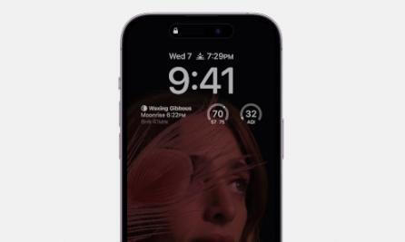
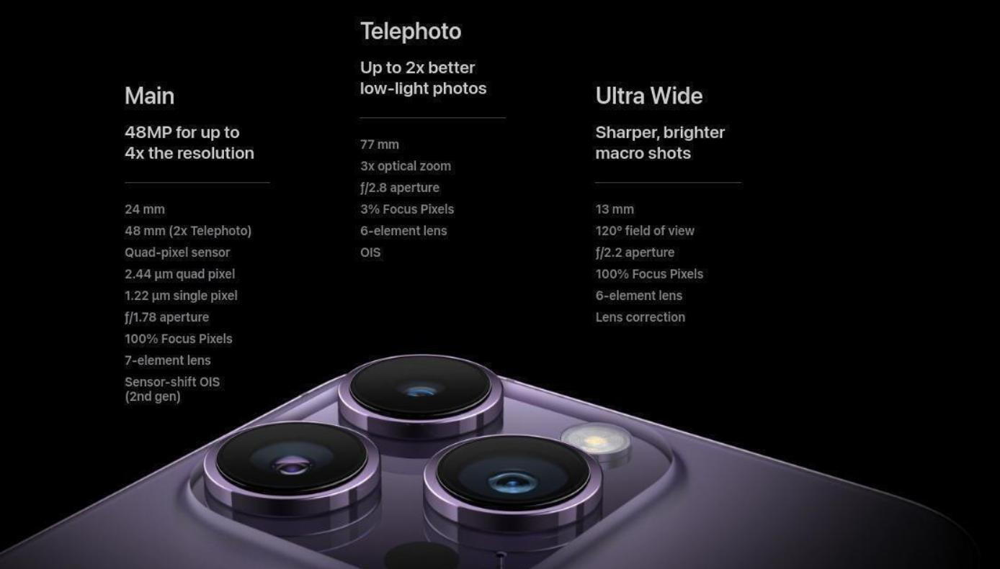
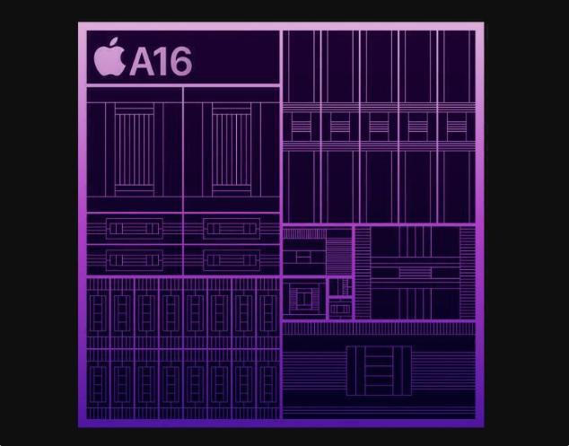

Περιγραφή
Οθόνη Super Retina XDR
Οθόνη Super Retina XDR 6,1 ιντσών με λειτουργία Always-On και ProMotion.Ενεργοποιείται με νέο ρυθμό ανανέωσης 1Hz και διαθέτεις τεχνολογίες μείωσης
κατανάλωσης ενέργειας, ανάλογα με την χρήση. Διατηρεί την ώρα, τα widgets
και τις δραστηριότητες άμεσα προσβάσιμες. Επιπλέον, υποστηρίζει ρύθμιση φωτεινότητας
έως 2000 nits η οποία είναι διπλάσια από τη φωτεινότητα του iPhone 13 Pro και
Ceramic Shield για αντοχή της οθόνης σε πτώσεις, σκόνη και νερό.

Dynamic Island
Ένας νέος τρόπος αλληλεπίδρασης με το Iphone
Το Dynamic Island δημιουργεί νέους τρόπους αλληλεπίδρασης με το iPhone,διαθέτοντας ένα σχεδιασμό που του δίνει την δυνατότητα να προσαρμόζεται
σε πραγματικό χρόνο για να εμφανίζει σημαντικές ειδοποιήσεις, εφαρμογές
και δραστηριότητες. Η TrueDepth κάμερα έχει επανασχεδιαστεί ώστε να καταλαμβάνει
μικρότερο μέρος της επιφάνειας της οθόνης. Χωρίς να παρεμποδίζει το περιεχόμενο
της οθόνης, το Dynamic Island διατηρεί μια ενεργή κατάσταση για να επιτρέπει στους
χρήστες ευκολότερη πρόσβαση στα χειριστήρια με ένα απλό πάτημα και κράτημα.

Photonic Engine
Το iPhone 14 Pro διαθέτει Photonic Engine που εξασφαλίζει καλύτερες λήψεις φωτογραφιώνσε μεσαίο και χαμηλό φωτισμό, για όλες τις κάμερες μέσω υλικού και λογισμικού.
Πιο συγκεκριμένα έως 2x στην κύρια κάμερα, έως 3x στην Ultra Wide κάμερα, έως 2x στην
τηλεφακό κάμερα και έως 2x στην κάμερα TrueDepth. Το Photonic Engine επιτρέπει αυτή
την αύξηση της ποιότητας, εφαρμόζοντας το Deep Fusion νωρίτερα στη διαδικασία απεικόνισης
για να παρέχει εξαιρετική λεπτομέρεια και να διατηρεί τις λεπτές υφές, να παρέχει καλύτερο
χρώμα και να διατηρεί περισσότερες πληροφορίες σε μια φωτογραφία.
24 Frames per Second ProRes3
Η κινηματογραφική λειτουργία πραγματοποιεί τώρα λήψεις σε 4K HDR στα 24 fps, το πρότυποτης κινηματογραφικής βιομηχανίας. Τώρα μπορείτε να κάνετε απρόσκοπτη επεξεργασία με άλλα
επαγγελματικά πλάνα σε 4K στα 24 ή 30 fps και μπορείτε ακόμη και να επεξεργαστείτε το
εφέ βάθους μετά τη λήψη.
Επεξεργαστής Α16 Bionic
Ο επεξεργαστής A16 διαθέτει 6 πυρήνες και μια GPU 5 πυρήνων με 50 τοις εκατό μεγαλύτερο εύροςζώνης μνήμης, που είναι ιδανική για παιχνίδια και εφαρμογές. Ακόμα είναι εφοδιασμένος με νέο
Neural Engine 16 πυρήνων, ικανό για σχεδόν 17 τρισεκατομμύρια πράξεις ανά δευτερόλεπτο.
Χρησιμοποιώντας την αρχιτεκτονική fusion της Apple για να συνδυάσει την απόδοση και την
εξοικονόμηση ενέργειας, το τσιπ προσφέρει υψηλές επιδόσεις. Ακόμα CPU, GPU, Neural Engine
και ο επεξεργαστής σήματος εικόνας συνεργάζονται απρόσκοπτα για να υποστηρίξουν την κάμερα
και να εκτελέσουν έως και 4 τρισεκατομμύρια operations ανά φωτογραφία.

Αξιολογήσεις
marios_makropoulos
, 05/11/2022Βαθμολογία: ★★★★☆
Τέλειο κινητό! Θα ήταν τέλειο αν δεν υπήρχαν τα bugs με το iOS 16.
alexandros_kokko21
, 25/11/2022Βαθμολογία: ★★★★★
Ερχομαι απο το iPhone 11 σε αυτο το μοντελο και εχω να πω πως εχει τεραστιες διαφορες. Εχω ερωτευτει με το ποσο smooth ειναι η κινηση του ειναι παρα πολυ γρηγορο οσο δε παει.. η επαννεκινηση του γινεται σε δευτερολεπτα πρωτη φορα το βλεπω σε αιφον, η εφαρμογες ανοιγουν γρηγορα, τα στορυ στο ινσταγκραμ δεν υπαρχει καθως τα αλλαζεις… γενικα το 120hz ειναι αρκετα ικανοποιητικό. Η καμερα οπου ειναι 48mp ειναι φανταστικη και ειναι ο κυριος λογος που το πηρα το κινητο (μαζι με το dynamic island) οπου και αυτο ειναι ικανοποιητικο κατι διαφορετικο αλλα μεχρι εκει δε θα το δειτε συχνα να ανοιγει παραθυρακι κτλπ. Ομως ειναι ομορφο. Η συσκευη ειναι στιβαρή παρα πολυ καλη ποιοτητα το χρωμα matte πιστευω το καλυτερο χρωμα που θα επαιρνε καποιος στο συγκεκριμένο. Τελος αν ειστε ιδιοκτητες του iphone 12 και κατω μη το σκεφτεστε καν αν εχετε την οικονομικη δυνατοτητα. Αυτα απο εμενα. TOP